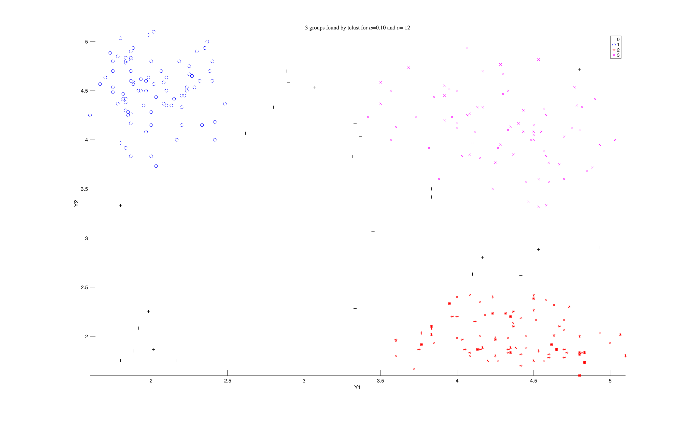

tclust
Clusters data while setting aside a fixed share of it as noise, so a few odd points cannot drag a cluster centre away from where it belongs.
Input arguments
Mandatory:
| Argument | Type | Description |
|---|---|---|
Y | Matrix{Float64} | n x v data matrix |
k | Int | how many clusters to look for |
alpha | Float64 | proportion of units to trim as noise |
restrfactor | Int | how different the cluster spreads may be |
Optional, passed as name-value keywords:
| Argument | Description |
|---|---|
msg | set to 0 to silence progress messages |
plots | set to 0 for no plot |
Output arguments
| Value | Type | Description |
|---|---|---|
idx | Matrix{Float64} | cluster label per unit, 0 meaning trimmed |
muopt | Matrix{Float64} | k x v, one centroid per row |
Example
using FSDABridge
using Printf
Y = eval_expr("table2array(getfield(load('geyser2.mat'),'geyser2'))")
n = size(Y, 1)
k = 3 # look for three clusters
alpha = 0.1 # set aside 10 percent of the eruptions as noise
restr = 12 # clusters may differ in spread, but not by more than this
# tclust starts from random subsets, so seed MATLAB for a repeatable answer.
call("rng", 1234, nargout = 0)
out = tclust(Y, k, alpha, restr; msg = 0, plots = 0)
idx = Int.(vec(out["idx"])) # 0 means trimmed
mu = out["muopt"]
for c in 1:k
@printf(" cluster %d %4d eruptions centroid %8.2f %8.2f\n",
c, count(==(c), idx), mu[c, 1], mu[c, 2])
end
stop_engine()Output
cluster 1 84 eruptions centroid 2.01 4.51
cluster 2 84 eruptions centroid 4.35 1.99
cluster 3 75 eruptions centroid 4.29 4.11A Dict in which idx gives the cluster label of every unit, with 0 meaning the unit was trimmed, and muopt holds one centroid per row.
Read each centroid as a pair. Old Faithful alternates, so there are clusters for short-then-long and long-then-short, but none where both this eruption and the previous one were short.
The three clusters found, each in its own colour, with the trimmed units shown as black crosses.

See also
- tclust documentation: https://rosa.unipr.it/FSDA/tclust.html
- FSDA datasets information: https://rosa.unipr.it/FSDA/datasets_clu.html